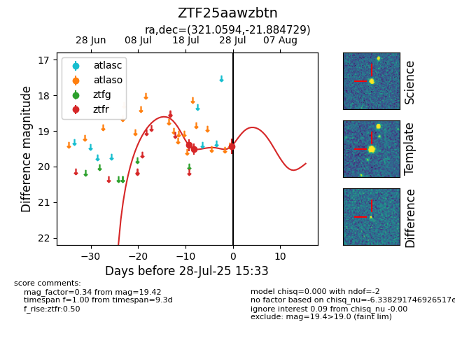

Target ZTF25aawzbtn at 2025-07-28 15:33, see:
FINK: fink-portal.org/ZTF25aawzbtn
Lasair: lasair-ztf.lsst.ac.uk/objects/ZTF25aawzbtn
ALeRCE: alerce.online/object/ZTF25aawzbtn
alt names
ZTF25aawzbtn (ztf,fink)
coordinates:
equatorial (ra, dec) = (321.0594,-21.88473)
galactic (l, b) = (27.4432,-42.89649)
photometry
last ztfr=19.42
3 ztfr detections
